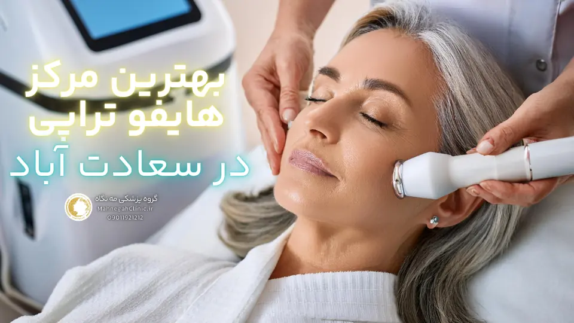
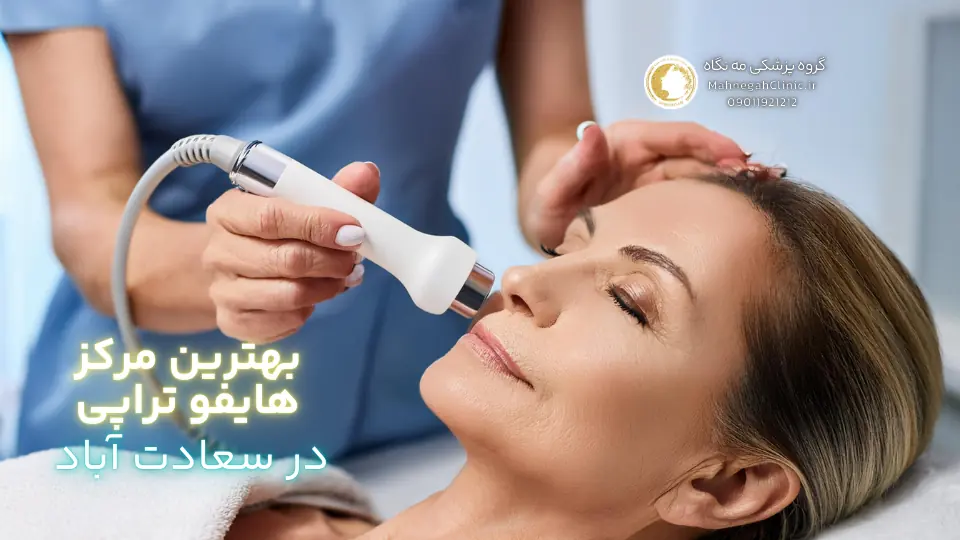
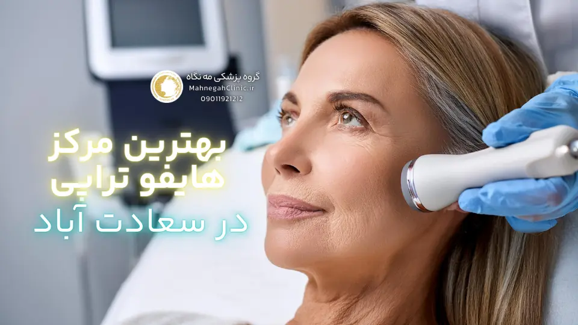
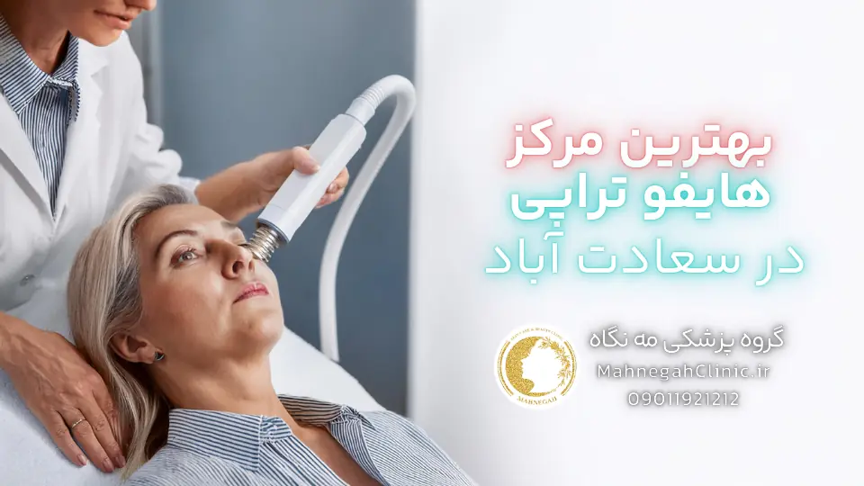
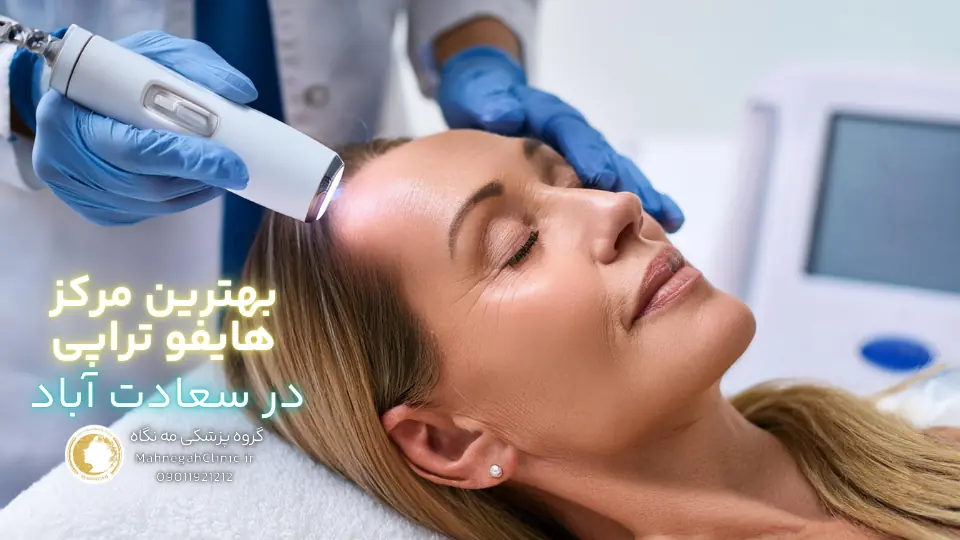
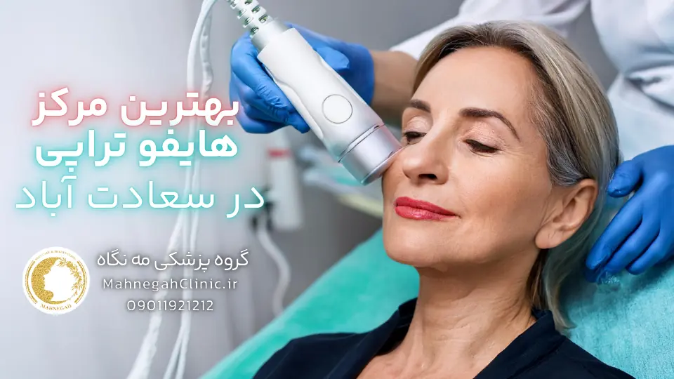

خانه / مجله / جوانسازی پوست
بهترین مرکز هایفو صورت در سعادت آباد: نتایج تضمینی

گروه پزشکی مه نگاه: سعادت آباد، ریاضی بخشایش، ساختمان عرفان، واحد 108
در قلب سعادت آباد، جایی که زیبایی و سلامت در هم میآمیزند، گروه پزشکی مه نگاه (بهترین مرکز هایفو صورت در سعادت آباد) با افتخار آماده ارائه خدمات هایفو صورت با بالاترین کیفیت به شما عزیزان است.
ما در این مرکز، با بهرهگیری از تخصص پزشکان مجرب، استفاده از تکنولوژیهای روز دنیا و محیطی آرام و دلنشین، به شما کمک میکنیم تا جوانی و شادابی پوست خود را بازیابید و اعتماد به نفس خود را افزایش دهید.
اگر به دنبال بهترین مرکز هایفو در تهران هستید، گروه پزشکی مه نگاه با ارائه خدماتی فراتر از انتظار، انتخابی ایدهآل برای شما خواهد بود. ما در این مرکز، با تمرکز بر نیازها و خواستههای شما، بهترین و مناسبترین روش درمانی را برای شما انتخاب میکنیم و در تمام مراحل درمان، در کنار شما هستیم.
منتظر حضور گرم شما در گروه پزشکی مه نگاه هستیم. برای کسب اطلاعات بیشتر و رزرو نوبت، با ما تماس بگیرید.
آدرس: سعادت آباد، خیابان ریاضی بخشایش، ساختمان عرفان
موبایل:
تلفن:
لوکیشن: بهترین مرکز هایفوتراپی صورت در سعادت آباد

1. هایفوتراپی صورت چیست و چگونه عمل میکند؟
هایفوتراپی صورت یک روش غیرتهاجمی و بدون نیاز به جراحی است که برای لیفتینگ و جوانسازی پوست مورد استفاده قرار میگیرد. این روش با استفاده از امواج اولتراسوند متمرکز با شدت بالا (HIFU) عمل میکند. این امواج به لایههای عمیق پوست نفوذ کرده و باعث ایجاد حرارت کنترلشده در این نواحی میشوند. این حرارت باعث تحریک تولید کلاژن و الاستین جدید در پوست میشود که منجر به سفت شدن و لیفتینگ پوست میشود.
مزایای انجام در بهترین مرکز هایفو صورت درسعادت آباد
- غیرتهاجمی و بدون نیاز به جراحی: هایفوتراپی یک روش ایمن و بدون درد است که نیازی به برش یا بخیه ندارد.
- نتایج طبیعی و ماندگار: نتایج هایفوتراپی به تدریج و در طول چند ماه ظاهر میشوند و میتوانند تا یک سال یا بیشتر ماندگار باشند.
- زمان بهبودی کوتاه: پس از هایفوتراپی، شما میتوانید بلافاصله به فعالیتهای روزمره خود بازگردید.
- قابل انجام برای انواع پوست: هایفوتراپی برای انواع پوست و رنگ پوست مناسب است.
- بدون عوارض جانبی جدی: هایفوتراپی عوارض جانبی کمی دارد که معمولاً خفیف و موقتی هستند.
کاربردهای هایفوتراپی صورت
- لیفتینگ و سفت کردن پوست صورت و گردن
- کاهش چین و چروکهای صورت
- بهبود خطوط اخم و لبخند
- رفع افتادگی پلکها
- بهبود ظاهر غبغب
- زاویهسازی فک و صورت
هایفوتراپی صورت یک روش موثر و ایمن برای جوانسازی پوست است که میتواند به شما کمک کند تا ظاهری جوانتر و شادابتر داشته باشید. اگر به دنبال یک روش غیرتهاجمی برای لیفتینگ و سفت کردن پوست خود هستید، هایفوتراپی میتواند یک گزینه عالی برای شما باشد.

2. چرا هایفوتراپی در سعادت آباد؟
سعادت آباد به عنوان یکی از مناطق لوکس و پرطرفدار تهران، به مرکزی برای کلینیکها و مراکز زیبایی پیشرفته تبدیل شده است.
این منطقه با تمرکز بالای مراکز زیبایی و درمانی، دسترسی آسان به تجهیزات و تکنولوژیهای روز دنیا را برای ساکنین این منطقه و سایر نقاط تهران فراهم کرده است. به همین دلیل، اگر به دنبال "بهترین مرکز هایفو صورت در سعادت آباد" هستید، انتخابهای زیادی پیش روی شما خواهد بود.
دسترسی آسان و موقعیت مکانی مناسب
سعادت آباد با قرار گرفتن در غرب تهران و دسترسی آسان از طریق بزرگراههای اصلی، به راحتی از نقاط مختلف شهر قابل دسترس است.
این موقعیت مکانی مناسب، مراجعه به کلینیکهای زیبایی در این منطقه را برای ساکنین سایر مناطق تهران نیز تسهیل میکند. همچنین، وجود پارکینگهای عمومی و خصوصی در سعادت آباد، مشکل پارک خودرو را برای مراجعهکنندگان به حداقل میرساند.
تمرکز کلینیکهای زیبایی در سعادت آباد
وجود تعداد زیادی کلینیک زیبایی در سعادت آباد، باعث ایجاد یک فضای رقابتی شده است که به نفع مراجعهکنندگان است. این رقابت، کلینیکها را به ارائه خدمات با کیفیت بالاتر، استفاده از تکنولوژیهای پیشرفتهتر و قیمتهای رقابتیتر ترغیب میکند.
همچنین، تمرکز کلینیکهای زیبایی در این منطقه، امکان مقایسه و انتخاب بهترین مرکز را برای مراجعهکنندگان فراهم میکند.
با توجه به این مزایا، سعادت آباد به عنوان یک مقصد ایدهآل برای افرادی که به دنبال خدمات زیبایی با کیفیت بالا، از جمله هایفوتراپی صورت هستند، شناخته میشود. در این منطقه، شما میتوانید از بین بهترین مراکز هایفوتراپی، مرکزی را انتخاب کنید که با نیازها و بودجه شما سازگار باشد.

3. ویژگیهای بهترین مرکز هایفو صورت در سعادت آباد
انتخاب بهترین مرکز هایفو صورت در سعادت آباد میتواند یک تصمیم چالشبرانگیز باشد، به خصوص با وجود گزینههای فراوان در این منطقه. اما با در نظر گرفتن چند ویژگی کلیدی، میتوانید انتخاب خود را آسانتر کنید و از یک تجربه درمانی رضایتبخش بهرهمند شوید.
استفاده از تکنولوژی پیشرفته و دستگاههای مدرن
یکی از مهمترین ویژگیهای یک مرکز هایفوتراپی خوب، استفاده از تکنولوژی پیشرفته و دستگاههای مدرن است. دستگاههای جدیدتر هایفوتراپی، دقت و اثربخشی بیشتری دارند و میتوانند نتایج بهتری را در کمترین زمان ممکن ارائه دهند.
همچنین، این دستگاهها معمولا دارای سیستمهای خنککننده هستند که باعث کاهش درد و ناراحتی در طول درمان میشوند. بنابراین، هنگام انتخاب یک مرکز هایفوتراپی، حتما از نوع دستگاه مورد استفاده و سال ساخت آن سوال کنید.
پزشکان متخصص و با تجربه
تجربه و تخصص پزشک انجام دهنده هایفوتراپی نیز بسیار مهم است. یک پزشک متخصص و با تجربه میتواند پوست شما را به درستی ارزیابی کند، بهترین تنظیمات دستگاه را برای شما انتخاب کند و درمان را با دقت و ایمنی کامل انجام دهد.
همچنین، یک پزشک خوب میتواند به شما در مورد مراقبتهای قبل و بعد از هایفوتراپی مشاوره دهد و به سوالات شما پاسخ دهد. بنابراین، قبل از انتخاب یک مرکز هایفوتراپی، حتما در مورد مدارک و سوابق پزشک انجام دهنده تحقیق کنید و در صورت امکان، نظرات سایر بیماران را نیز بررسی کنید.
علاوه بر این دو ویژگی اصلی، موارد دیگری نیز وجود دارند که میتوانند در انتخاب بهترین مرکز هایفو صورت در سعادت آباد به شما کمک کنند.
به عنوان مثال، میتوانید به محیط کلینیک، رعایت بهداشت، برخورد پرسنل، قیمتها و نظرات سایر بیماران توجه کنید. با در نظر گرفتن همه این عوامل، میتوانید یک مرکز هایفوتراپی را انتخاب کنید که بهترین خدمات را با بالاترین کیفیت به شما ارائه دهد.

4. مزایای انتخاب گروه پزشکی مه نگاه به عنوان بهترین مرکز هایفو صورت در سعادت آباد
در میان انبوهی از مراکز هایفو سعادت آباد، گروه پزشکی مه نگاه با تکیه بر ویژگیهای منحصربهفرد خود، به عنوان بهترین مرکز هایفو صورت در سعادت آباد شناخته میشود.
این مرکز با بهرهگیری از کادر پزشکی متخصص و مجرب، استفاده از جدیدترین تکنولوژیهای هایفوتراپی و ارائه خدمات با کیفیت بالا، توانسته است رضایت مراجعهکنندگان را جلب کند و به عنوان یک انتخاب برتر در زمینه جوانسازی پوست مطرح شود.
بهرهگیری از کادر پزشکی مجرب و متخصص در بهترین مرکز هایفو صورت در سعادت آباد
گروه پزشکی مه نگاه با گردآوری تیمی از پزشکان متخصص و با تجربه در زمینه هایفوتراپی، اطمینان حاصل میکند که هر درمان با دقت و ایمنی کامل انجام میشود. این پزشکان با ارزیابی دقیق پوست شما و در نظر گرفتن نیازها و انتظارات شما، بهترین روش درمانی را برای شما انتخاب میکنند و در طول درمان، شما را همراهی میکنند. همچنین، این مرکز با برگزاری دورههای آموزشی مداوم برای پزشکان خود، همواره از بهروزترین تکنیکها و روشهای درمانی در زمینه هایفوتراپی بهره میبرد.
استفاده از جدیدترین تکنولوژیها در بهترین مرکز هایفو صورت در سعادت آباد
گروه پزشکی مه نگاه با سرمایهگذاری در جدیدترین تکنولوژیهای هایفوتراپی، تضمین میکند که شما از بهترین و موثرترین درمانهای موجود بهرهمند شوید.
این تکنولوژیها با دقت و قدرت بالا، نتایج چشمگیری را در جوانسازی پوست ایجاد میکنند و در عین حال، کمترین میزان درد و ناراحتی را برای شما به همراه دارند. همچنین، این مرکز با بهکارگیری دستگاههای مجهز به سیستمهای خنککننده، راحتی و آرامش شما را در طول درمان تضمین میکند.
با انتخاب گروه پزشکی مه نگاه به عنوان مرکز هایفوتراپی خود، شما میتوانید از مزایای زیر بهرهمند شوید:
- دریافت مشاوره تخصصی و شخصیسازی شده از پزشکان متخصص
- بهرهمندی از جدیدترین و موثرترین تکنولوژیهای هایفوتراپی
- تجربه یک درمان ایمن، راحت و بدون درد
- دستیابی به نتایج طبیعی و ماندگار در جوانسازی پوست
- بهرهمندی از خدمات پس از فروش و پیگیری نتایج درمان
گروه پزشکی مه نگاه به عنوان یک انتخاب برتر برای افرادی که به دنبال بهترین مرکز هایفو صورت در سعادت آباد هستند، مطرح میشود.
شما میتوانید از یک تجربه درمانی رضایتبخش و نتایج شگفتانگیز در جوانسازی پوست خود لذت ببرید.

5. مراحل انجام هایفوتراپی صورت در بهترین مرکز هایفو صورت در سعادت آباد
در گروه پزشکی مه نگاه، ما به اهمیت تجربه درمانی راحت و بدون استرس برای مراجعهکنندگان خود واقف هستیم. به همین دلیل، فرایند هایفوتراپی صورت در این مرکز به گونهای طراحی شده است که در کمال آرامش و اطمینان خاطر انجام شود. این فرایند شامل مراحل زیر است:
مشاوره اولیه و ارزیابی پوست
در اولین مرحله، شما با پزشک متخصص پوست و مو ملاقات خواهید کرد. در این جلسه، پزشک به بررسی دقیق پوست شما میپردازد، نیازها و انتظارات شما را ارزیابی میکند و در مورد مزایا، معایب و عوارض احتمالی هایفوتراپی با شما صحبت میکند. همچنین، پزشک به سوالات شما پاسخ میدهد و در صورت لزوم، روشهای درمانی جایگزین را به شما پیشنهاد میدهد. این مرحله به شما کمک میکند تا در مورد هایفوتراپی تصمیمگیری آگاهانهتری داشته باشید و با اطمینان خاطر بیشتری درمان را آغاز کنید.
انجام هایفوتراپی توسط پزشک متخصص در بهترین مرکز هایفو صورت در سعادت آباد
پس از مشاوره اولیه، شما برای انجام هایفوتراپی آماده میشوید. پزشک متخصص با استفاده از دستگاه هایفوتراپی پیشرفته و تنظیمات مناسب برای پوست شما، درمان را آغاز میکند.
در طول درمان، پزشک به دقت نواحی مورد نظر را تحت درمان قرار میدهد و در صورت نیاز، از سیستمهای خنککننده برای کاهش درد و ناراحتی استفاده میکند. این مرحله معمولا بین 30 تا 90 دقیقه طول میکشد و بسته به وسعت ناحیه تحت درمان و شدت مشکلات پوستی، ممکن است نیاز به جلسات درمانی بیشتری داشته باشید.
در گروه پزشکی مه نگاه، ما به کیفیت و ایمنی درمانهای خود اهمیت میدهیم. به همین دلیل، تمام مراحل هایفوتراپی صورت تحت نظارت پزشکان متخصص و با استفاده از تجهیزات پیشرفته انجام میشود. همچنین، ما به رعایت بهداشت و استریلیزاسیون تجهیزات خود اهمیت میدهیم تا از هرگونه عفونت و عوارض جانبی جلوگیری کنیم.
با انتخاب گروه پزشکی مه نگاه، شما میتوانید از یک تجربه درمانی ایمن، راحت و موثر بهرهمند شوید و به نتایج دلخواه خود در جوانسازی پوست دست یابید.

6. مراقبتهای پس از هایفوتراپی صورت
پس از انجام هایفوتراپی صورت، رعایت برخی نکات و مراقبتها میتواند به بهبود سریعتر پوست و دستیابی به نتایج مطلوب کمک کند. در گروه پزشکی مه نگاه، ما به شما توصیههای لازم را در این زمینه ارائه میدهیم تا بتوانید از اثرات جوانسازی هایفوتراپی به طور کامل بهرهمند شوید.
استفاده از کرمهای مرطوبکننده و ضد آفتاب
پس از هایفوتراپی، پوست شما ممکن است کمی حساس و خشک شود. بنابراین، استفاده از کرمهای مرطوبکننده مناسب میتواند به حفظ رطوبت پوست و کاهش حساسیت آن کمک کند.
همچنین، استفاده از ضد آفتاب با SPF بالا برای محافظت از پوست در برابر اشعههای مضر خورشید بسیار ضروری است. این کار میتواند از ایجاد لکهای پوستی و آسیبهای ناشی از نور خورشید جلوگیری کند و به حفظ نتایج هایفوتراپی کمک کند.
پرهیز از قرار گرفتن در معرض نور خورشید
در روزهای ابتدایی پس از هایفوتراپی، بهتر است از قرار گرفتن مستقیم در معرض نور خورشید خودداری کنید. همچنین، استفاده از کلاه و عینک آفتابی میتواند به محافظت از پوست شما در برابر اشعههای مضر خورشید کمک کند.
در صورت لزوم، میتوانید از پزشک خود در مورد زمان مناسب برای بازگشت به فعالیتهای روزانه و قرار گرفتن در معرض نور خورشید سوال کنید.
علاوه بر این موارد، برخی نکات دیگر نیز وجود دارند که میتوانند به بهبود سریعتر پوست و حفظ نتایج هایفوتراپی کمک کنند. به عنوان مثال، میتوانید از مصرف الکل و سیگار خودداری کنید، از محصولات آرایشی سنگین استفاده نکنید و پوست خود را به آرامی تمیز کنید. همچنین، در صورت بروز هرگونه عوارض جانبی غیرمعمول، مانند قرمزی، تورم یا درد شدید، حتما با پزشک خود تماس بگیرید.
با رعایت این مراقبتهای ساده، شما میتوانید از نتایج هایفوتراپی صورت خود به طور کامل لذت ببرید و ظاهری جوانتر و شادابتر را برای مدت طولانیتری حفظ کنید. در گروه پزشکی مه نگاه، ما همواره در کنار شما هستیم تا به شما در دستیابی به بهترین نتایج ممکن کمک کنیم.
7. هزینه انجام در بهترین مرکز هایفو صورت در سعادت آباد
هزینه هایفوتراپی صورت یکی از مهمترین عواملی است که افراد در انتخاب مرکز درمانی مناسب در نظر میگیرند. در سعادت آباد، به عنوان یکی از مناطق لوکس تهران، هزینه هایفوتراپی ممکن است کمی بالاتر از سایر مناطق باشد.
اما این به معنای عدم امکان یافتن مراکز با قیمت مناسب نیست. با کمی تحقیق و مقایسه، میتوانید مرکزی را پیدا کنید که خدمات با کیفیت را با قیمتی منصفانه ارائه دهد.
عوامل موثر بر هزینه هایفوتراپی
هزینه هایفوتراپی صورت به عوامل مختلفی بستگی دارد، از جمله:
- ناحیه تحت درمان: هزینه هایفوتراپی بسته به وسعت ناحیه تحت درمان متفاوت است. به عنوان مثال، هایفوتراپی کل صورت معمولا گرانتر از هایفوتراپی یک ناحیه خاص مانند پیشانی یا اطراف چشم است.
- تعداد جلسات درمانی: برخی افراد ممکن است برای دستیابی به نتایج مطلوب به چند جلسه هایفوتراپی نیاز داشته باشند. در این صورت، هزینه کلی درمان افزایش مییابد.
- نوع دستگاه و تکنولوژی مورد استفاده: دستگاههای جدیدتر و پیشرفتهتر هایفوتراپی معمولا گرانتر هستند و ممکن است هزینه درمان را افزایش دهند.
- تجربه و تخصص پزشک: پزشکان با تجربه و متخصص ممکن است هزینه بیشتری برای خدمات خود دریافت کنند.
- موقعیت مکانی کلینیک: کلینیکهای واقع در مناطق لوکستر مانند سعادت آباد معمولا هزینههای بالاتری دارند.
مقایسه هزینه هایفوتراپی با سایر روشهای جوانسازی
در مقایسه با سایر روشهای جوانسازی پوست مانند جراحی لیفت صورت، هایفوتراپی معمولا هزینه کمتری دارد. همچنین، هایفوتراپی نیازی به بستری شدن در بیمارستان و دوره نقاهت طولانی ندارد، که این موضوع نیز میتواند در کاهش هزینهها موثر باشد. با این حال، مهم است که هزینه را تنها عامل تعیینکننده در انتخاب مرکز درمانی قرار ندهید. کیفیت خدمات، تجربه پزشک و استفاده از تکنولوژیهای پیشرفته نیز از اهمیت بالایی برخوردارند.
در گروه پزشکی مه نگاه، ما تلاش میکنیم تا خدمات با کیفیت را با قیمتی منصفانه به مراجعهکنندگان خود ارائه دهیم. ما همچنین تخفیفها و پیشنهادات ویژهای را برای مراجعهکنندگان خود در نظر میگیریم. برای کسب اطلاعات بیشتر در مورد هزینه هایفوتراپی صورت در گروه پزشکی مه نگاه، میتوانید با ما تماس بگیرید یا به وبسایت ما مراجعه کنید.
8. پاسخ به سوالات متداول درباره هایفوتراپی صورت
هایفوتراپی صورت، به عنوان یک روش جوانسازی غیرتهاجمی و موثر، سوالات زیادی را در ذهن افراد ایجاد میکند. در این بخش، به برخی از سوالات متداول درباره هایفوتراپی پاسخ میدهیم تا به شما در تصمیمگیری بهتر کمک کنیم.
آیا هایفوتراپی درد دارد؟
- اکثر افراد در طول هایفوتراپی احساس درد یا ناراحتی خاصی ندارند. برخی ممکن است احساس گرما یا سوزن سوزن شدن خفیفی در ناحیه تحت درمان داشته باشند، اما این احساس معمولا قابل تحمل است و پس از درمان برطرف میشود. در گروه پزشکی مه نگاه، ما از دستگاههای مجهز به سیستمهای خنککننده استفاده میکنیم تا راحتی شما را در طول درمان تضمین کنیم.
عوارض جانبی هایفوتراپی چیست؟
- هایفوتراپی معمولا عوارض جانبی کمی دارد و اکثر افراد میتوانند بلافاصله پس از درمان به فعالیتهای روزمره خود بازگردند. برخی از عوارض جانبی ممکن شامل قرمزی، تورم یا کبودی خفیف در ناحیه تحت درمان باشد که معمولا ظرف چند روز برطرف میشود. در موارد نادر، ممکن است عوارض جانبی جدیتری مانند سوختگی یا آسیب عصبی رخ دهد، اما این موارد بسیار نادر هستند و با انتخاب یک مرکز درمانی معتبر و پزشک متخصص میتوان از آنها جلوگیری کرد.
علاوه بر این سوالات، ممکن است سوالات دیگری نیز در ذهن شما وجود داشته باشد. در گروه پزشکی مه نگاه، ما همواره آماده پاسخگویی به سوالات شما هستیم. شما میتوانید با ما تماس بگیرید یا به وبسایت ما مراجعه کنید تا اطلاعات بیشتری در مورد هایفوتراپی صورت و سایر خدمات ما کسب کنید.
سوالات متداول
هایفوتراپی برای اکثر افراد بالای 30 سال که دچار افتادگی و شل شدگی پوست خفیف تا متوسط هستند، مناسب است. با این حال، در صورت بارداری، شیردهی، بیماریهای پوستی فعال یا استفاده از برخی داروها، بهتر است قبل از انجام هایفوتراپی با پزشک مشورت کنید.
هایفوتراپی معمولا بدون درد است، اما برخی افراد ممکن است احساس گرما یا سوزش خفیفی در طول درمان داشته باشند. این احساس معمولا قابل تحمل است و پس از درمان برطرف میشود.
نتایج هایفوتراپی معمولا به تدریج و در طول چند هفته تا چند ماه پس از درمان قابل مشاهده است. با افزایش تولید کلاژن و الاستین جدید، پوست به تدریج سفتتر و جوانتر میشود.
ماندگاری نتایج هایفوتراپی به عوامل مختلفی مانند سن، وضعیت پوست و مراقبتهای پس از درمان بستگی دارد. با این حال، معمولا نتایج هایفوتراپی تا یک سال یا بیشتر ماندگار است.
هایفوتراپی یک روش غیرتهاجمی است و نیازی به دوره نقاهت ندارد. شما میتوانید بلافاصله پس از درمان به فعالیتهای روزمره خود بازگردید.